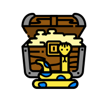

My Coding Projects
WM Bot
A multipurpose discord bot with more than 220 commands and 20,000+ lines of code written, took more than 1.5 years. All open source
WM Bot has more than 220 commands in more than 35 categories ranging from moderation to absurd texts. For a command list check the docs. This is my largest project ever and consists of more than 250,000 lines changed[proof]
- Python
- discord.py
- PostgreSQL
-  Rich
- And a lot more
PyPI Command Line
A beautiful command line interface for the Python Package Index
pypi-command-line is a colorful, powerful, and beautiful Command Line Interface for pypi.org It is a Python library that provides a command line interface to the Python Package Index and is a very easy way to search for packages and see information beautifully right in your terminal.
- Python
- Rich
-
- Typer
- And a lot more
vscode discord.py snippets
Code snippets for the python discord.py library in Visual Studio Code
If you use vscode and discord.py and you want to make a discord bot then vscode-discord-py-snippets would be for you. It contains a lot of common code snippets to add new commands/cogs/checks/features etc. to your bot quickly and easily
- JSON
- Visual Studio Code
Sponsorblock.py
A wrapper for the SponsorBlock API
Ever heard of sponsorblock? If not, SponsorBlock is an open-source crowdsourced browser extension and open API for skipping sponsor segments in YouTube videos. This library aims to provide an easy access to the Sponsorblock API with Python and implements all the hard work on your behalf. It even has a Command Line Interface so you can test it out without opening a REPL
- Python
- Rich
-
Todot
A powerful tool to parse TODOs/FIXMEs etc. from source files
Did you know that you can add things you have to do inside comments to remember them? Todot is a tool to automatically fetch all the todos/fixmes etc. from your source code and display them beautifully in the terminal with cool colors or save it to a text/markdown file. everything can be configured via a configuration file
- Python
- Rich
CharInfo
A simple and easy to use tool to get information about characters
If you know about among us then you may recognize this character: ඞ. But have you ever wondered what is this character? You can get information about any character with this tool. This tool is a Command Line Interface that provides information about characters
- Python
- Rich
Photography
These are some of the photos I've taken over the years. (metadata
is full-frame equivalent and the original is given inside
brackets)
© Copyright Wasi Master. All Rights Reserved under
Copy Right Act, 2000
- All
- People
- Animals
- Birds
- Other
Potrait
50mm f/1.8 (57mm f/1.2 on APS-C with speed-booster) 1/250s ISO 3200
Stray puppies sleeping
112mm f/29 (20mm f/5.8 on 1/2.3") 1/100s ISO 100
The Common Myna holding it's Prey in his mouth
722mm f/29 (129mm f/5.8 on 1/2.3") 1/125s ISO 200
Boats
28mm f/12.6 (4mm f/1.8 on 1/2.9" inside a Phone) 1/5194s ISO 200
Starry Nights
50mm f/1.8 (57mm f/1.2 on APS-C with speed-booster) 8s ISO 100
Sweet Sun along the River
28mm f/12.6 (4mm f/1.8 on 1/2.9" inside a Phone) 1/11686s ISO 250
Cat looking behind
722mm f/29 (129mm f/5.8 on 1/2.3") 1/500s ISO 500
Golden Earrings
722mm f/29 (129mm f/5.8 on 1/2.3") 1/320s ISO 500
Potrait
50mm f/1.8 (57mm f/1.2 on APS-C with speed-booster) 1/250s ISO 3200
Squirrel :))
722mm f/29 (129mm f/5.8 on 1/2.3") 1/640s ISO 400
Cool Friend
50mm f/2.5 (57mm f/2.0 on APS-C with speed-booster) 1/4000s ISO 100
Groom & Bride
50mm f/1.8 (57mm f/1.2 on APS-C with speed-booster) 1/250s ISO 100
Railway Station
28mm f/12.6 (4mm f/1.8 on 1/2.9" inside a Phone) 1/725s ISO 125
Water Lily
722mm f/40 (129mm f/7.1 on 1/2.3") 1/1000s ISO 500
Night sky with stars and clouds
50mm f/1.8 (57mm f/1.2 on APS-C with speed-booster) 8s ISO 100
Sparrow lookin kinda thicc ;)
722mm f/29 (129mm f/5.8 on 1/2.3") 1/125s ISO 100
Good Parrot
722mm f/29 (129mm f/5.8 on 1/2.3") 1/640s ISO 400
Common Myna looking down
722mm f/29 (129mm f/5.8 on 1/2.3") 1/60s ISO 400
Skills
Do note that this list is not exhaustive
About me
Born and raised in Bangladesh, trilingual (EN/BN/HI). I've been interested in computers and technology all my life. Worked on open source and private projects in Python, Java, Javascript, C/C++, C# etc.
Arian Mollik Wasi aka. Wasi Master
Programmer and Photographer
Worked on open source and private projects in Python, Java, Javascript, C/C++, C# etc. I'm also interested in photography and have been taking professional photos since 2015!
- Birthday: 18th April
- Website: wasi-master.github.io
- Location: Bangladesh
- Started Programming: March 2020
- Languages: English/Bengali/Hindi
- Email: arianmollik323@gmail.com
- Freelance: Not Available
- Usual Mood: Confident and Happy
PC Specs
| Item Type | Item Model |
|---|---|
| CPU: | AMD Ryzen 5 3600 |
| GPU: | MSI GeForce GTX 1660 Super Ventus XS OC 6GB Graphics Card |
| RAM: | 2× PNY XLR8 EPIC-X RGB 8GB DDR4 3200MHz |
| Motherboard: | MSI B450 TOMAHAWK MAX II AM4 AMD ATX Motherboard |
| HDD: | 1× Toshiba P300 1TB 3.5-Inch SATA 7200RPM Desktop HDD 1× Toshiba P300 2TB 3.5-Inch SATA 5400RPM Desktop HDD |
|
|
1× HP EX900 M.2 120GB PCIe NVMe Internal SSD |
| Power Supply: | Antec VP550 Plus 550W Non Modular Power Supply |
| Case: | Antec DF600 Flux Mid Tower Gaming Case |
| Case Fans: | 3× Antec F12 120mm RGB Case Fan 3× Gamdias AEOLUS M2 1201 120mm RGB Casing Cooling Fan 1× Antec Non-RGB High RPM Case Fan |
| Monitor: | ViewSonic VX2276 22" 1080p IPS |
| Keyboard: | Havit KB653GCM Wireless Keyboard |
| Mouse: | A4TECH Bloody Q80 NEON X'GLIDE Gaming Mouse |
FAQ
Arian Mollik Wasi or more commonly known as Wasi Master is a young programmer and photographer from Bangladesh. At just 14 years old he knows a lot of programming languages and programming concepts, He is a technology geek. His nickname is Wasi and he proclaims himself as a master so he set his name as Wasi Master